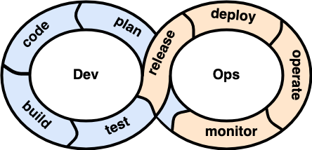
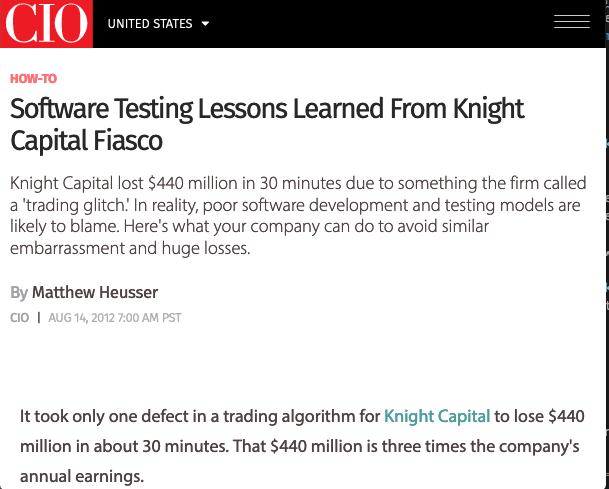
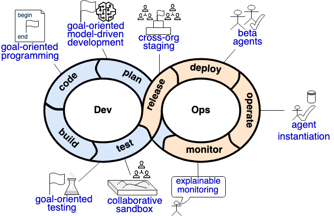

Developer Operations and Engineering Multi-Agent Systems
Timotheus Kampik
Umeå University
Cleber Jorge Amaral
IFSC, UFSC
Jomi Fred Hübner
UFSC
Mascardi et al. "Engineering Multi-Agent Systems: State of Affairs and the Road Ahead." Logan. "An agent programming manifesto."
A Process-Oriented Perspective
DevOps Ecosystem


Why DevOps?
Why EMAS?
DevOps and EMAS
| Autonomy Level | Example | Approach |
| Organization | Avoid handovers | DevOps |
| Integration | Avoid manual deployments & QA | DevOps |
| Operations | Avoid manual resource provisioning | DevOps |
| Artifact | Avoid manual low-level business decisions | EMAS |
DevOps and EMAS
DevOps and EMAS
| Existing Approach | Feature | Potential novelty |
| TDD | Goal-oriented TDD | Higher, declarative abstraction |
| Staging system | Cross-organizational staging system | Continuous deployments to one MAS by different organizations |
| Beta deployments of subsystems; A/B testing | Beta agents in production environments | Interaction between beta agents and stable agents |
| Operations monitoring | Explainable monitoring | System-centered vs. agent-centered perspective |
Mascardi et al. "Engineering Multi-Agent Systems: State of Affairs and the Road Ahead." Logan. "An agent programming manifesto."